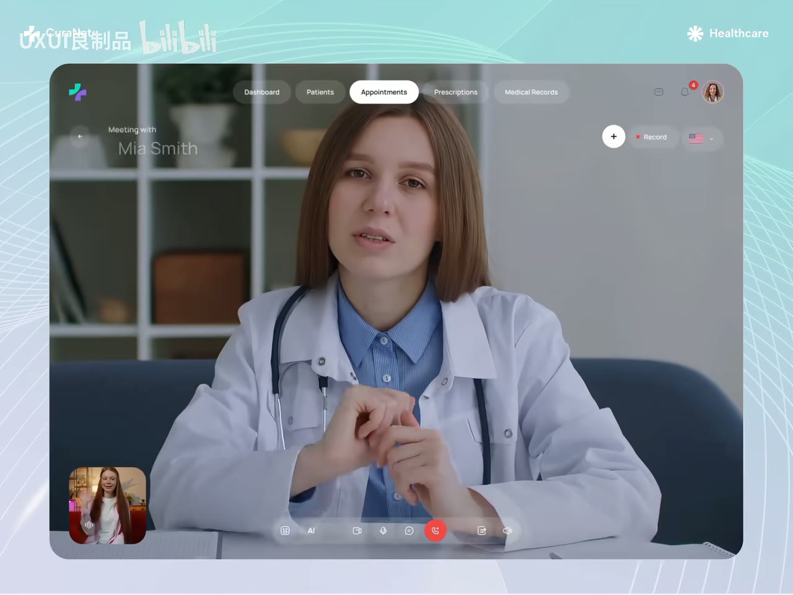

原视频 · 在线回看
点击后联网加载 B 站播放器；本地不下载整段视频。

原视频 · 在线回看
点击后联网加载 B 站播放器；本地不下载整段视频。
来源：这才是UI设计该有的“呼吸感”
UP 主：UXUI良制品 · 时长：1 分 37 秒 · 阅读强度：深度
有些界面放了不少东西，看起来却很从容；另一些界面功能不多，仍然让人觉得拥挤。仔细看，差别往往出现在内容之间：哪些东西被放在一起，哪些东西需要拉开距离，哪个对象应该先被注意到，以及正在操作的位置是否足够清楚。
我们可以把“呼吸感”理解为观察这些关系的一种说法。它与空白有关，也与主次、边界和强调方式有关。下面沿着几个具体界面来看：每张画面中，内容怎样安排，我们的视线又可以怎样顺着这些安排移动。
第一张界面把医生的视频放在中心，几乎占据整个工作区域。顶部仍然有 Dashboard、Patients、Appointments 等导航，底部也有通话控制，但这些按钮都靠近画面边缘，自身面积很小。左下角的另一个通话画面同样保持较小尺寸，没有把主画面分割成许多等大的区域。
这种安排先交代了当前任务：我们正在与一个人交谈。其他功能依然可以找到，却没有要求用户先阅读一整屏工具再开始交流。主画面与辅助控件之间的面积差别，已经表达了一部分优先顺序。
也要留意，轻盈外观有自己的取舍。部分控件用了半透明背景，视觉上不容易把画面切碎，但视频背景会变化，按钮文字的辨认仍然重要。把工具放轻一些，可以减少干扰；工具本身也需要保持可发现、可识别。这里值得学习的是怎样分配注意力，不能仅仅照搬透明效果。
AI Assistant 面板里有四张功能卡片，分别对应写作、销售分析、欺诈识别和广告分析。它们按照两列排列，每张卡片都有图标、名称和周围空间。下方另有一条输入框，附件、语音和发送入口也都在这条区域里。
我们可以先看功能名称，知道助手能帮忙处理哪一类事情；也可以把视线移到下面，直接输入请求。卡片之间的间隔帮助我们分辨四个入口，卡片组与输入框的距离又把两类操作分开。空白因此有了具体作用：它在告诉我们哪些东西属于一组，哪一部分是接下来输入的地方。
蓝色也有明确对象。选中的 Sales Insight 卡片出现蓝色轮廓，输入框沿边缘使用同类强调，发送按钮则是一块实色。其他卡片保持较安静的边界。读者可以沿着这些变化判断当前关注位置，无需给每个控件都加一行状态说明。
另一张画面把 Visitors by Device 与 Trend Analysis 并排放置。左侧用环形图表达组成关系，右侧用一条曲线表达变化趋势。两张卡片的标题都在上方，图形位于下面，卡片之间有明显间隔。
我们不用在同一个图形里同时寻找所有答案。想看组成，就看左边；想看趋势，就看右边。标题与图形相互靠近，让人知道这个图在回答哪个问题；两张卡片之间更大的距离，则提醒我们这是两个可以分别阅读的对象。圆角和浅背景让外观柔和，分组关系让内容容易辨认。
不过，这张画面适合观察图形布局，不能据此精确解释业务数据。右侧曲线没有完整坐标刻度，左侧也缺少逐项类别说明。页面要承担实际分析任务时，需要根据问题补上单位、时间范围或图例。空白应当帮助阅读已有信息，关键含义仍然要表达清楚。
表单例子里，上方是 Company name 文本框，下方是 Category 下拉选择。输入框中有文字光标，下拉列表已经展开，其中一项带有浅色底纹。两个带名字的彩色指针分别出现在不同区域，让人看到协作者所在的位置。
这里同时出现了几类信息：字段是什么、哪里可以输入、有哪些选项、别人正在看哪里。这些信息就放在相应对象附近。文字光标靠近输入内容，下拉项留在分类字段下方，名字跟着指针走，读者可以就近理解各个信号。
“空间够用”在这种界面里尤其具体。选项需要有自己的行，协作者标签需要容得下名字，焦点边框也要与相邻对象分开。如果各种状态都挤在一起，我们就要先辨认哪些标记属于哪个控件。保留适当距离，能让这些关系在画面上直接成立。
理赔记录表格的局部包含项目说明、日期、金额和状态等内容。项目沿着固定列排列，每一行都有相近高度，浅色分隔线把相邻记录区分开。阅读者可以先找到某一行，再沿着那一行查看其他字段，也可以沿状态列向下比较。
黄色 Pending、绿色 Paid、红色 Denied 帮助我们快速注意到状态差异，文字则说明颜色所代表的含义。图标与分隔线也在提供线索，但它们没有使用同样强的对比。强调因此保留了主次：先让需要辨别的状态醒目，其他结构帮助把记录排清楚。
这个例子说明，信息量较大时仍然可以有从容的阅读节奏。表格无需把每条内容拆成巨大卡片，稳定的行列本身就能提供秩序。我们可以观察行距是否足够、同类字段是否对齐、颜色是否有具体含义，再决定还有哪里需要调整。
最后一张地图页面使用很浅的蓝色描绘世界地图，在少量位置放上颜色更深的圆形数值标记。标题和简短说明位于上方，地图提供位置背景，数值点成为更醒目的阅读对象。
背景与标记的对比很容易看出来。我们需要地图帮助理解位置，却不需要每条地理细节都同样醒目。降低底图的视觉重量，把强调留给标记，能够让两者各自承担任务。标记之间也保留了距离，没有在同一块区域里互相遮挡。
圆点突出之后，数值的含义也需要清楚。地理位置能够告诉我们“在哪里”，数字究竟统计什么、采用哪个时间范围，还需要相应的文字说明。视觉强调让数据容易被注意到，内容说明让数据能够被正确理解。
这几个界面提供了一条直观的观察路径：先找主任务，再看内容如何分组，接着看当前状态如何被强调。空白、边框、颜色与位置共同表达这些关系。它们的作用可以在具体对象之间看出来。
| 观察对象 | 可以留意的具体关系 |
|---|---|
| 视频会诊 | 主画面与辅助操作的面积差别 |
| AI 助手 | 预设功能组与自由输入区域的距离 |
| 图表卡片 | 每个标题与对应图形的归属 |
| 协作表单 | 字段、选项、光标和协作者位置 |
| 多行表格 | 行列秩序与有限的状态强调 |
| 地图页面 | 位置背景与数值标记的对比 |
外观舒适与使用清楚需要一起考虑。浅色、透明和简化图形能够减轻画面重量，必要文字、数据含义和操作状态仍然应该容易辨认。把这个平衡放回实际任务中，才容易判断一块空白或一种强调到底有没有帮助。
看一个页面时，你首先注意到哪个对象？这个对象是否与页面当前的主要任务有关？
在 AI 助手和表格两个例子中，内容的数量与排列方式有什么不同？它们分别依靠什么让你分清对象？
哪些细节减轻了画面重量，哪些细节保留了必要含义？如果继续减少文字或对比，最先可能影响哪一项使用需求？